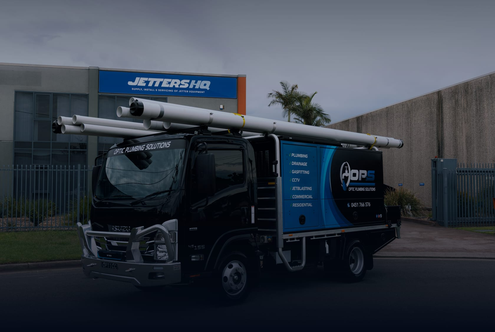
Licensed plumbing and drainage across Sydney. Emergency blockages, jet blasting, CCTV, excavation, relining and planned maintenance.
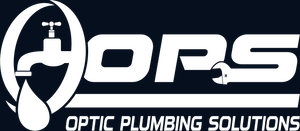
| Section | Page | |
|---|---|---|
| 01 | Company profile | 03 |
| 02 | Capability at a glance | 04 |
| 03 | Emergency and blockage call outs | 05 |
| 04 | Blocked drains and jet blasting | 06 |
| 05 | Excavation, relining and stormwater | 07 |
| 06 | CCTV, leak detection and reporting | 08 |
| 07 | Preventative maintenance | 09 |
| 08 | Backflow, compliance and defects | 10 |
| 09 | Hot water, gas and general plumbing | 11 |
| 10 | Who we work for | 12 |
| 11 | Safety, compliance and quality | 13 |
| 12 | Equipment and vehicles | 14 |
| 13 | How we work | 15 |
| 14 | Why Optic Plumbing Solutions | 16 |
| 15 | Contact and engagement | 17 |
Prepared for councils, government agencies, developers, facilities managers and property groups assessing Optic Plumbing Solutions for reactive and scheduled plumbing work.
A NSW licensed plumbing and drainage contractor based in Concord, working across Sydney for commercial, industrial, government, strata and residential clients. Maintenance and drainage is our core business.
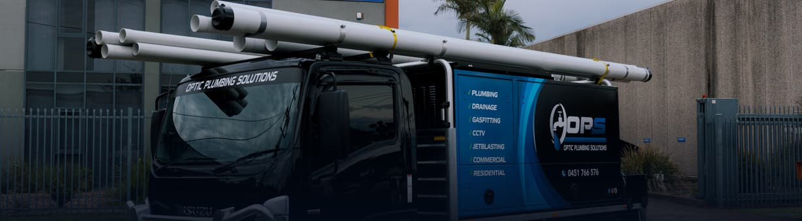
We investigate, clear, repair, replace and maintain sewer, stormwater, water and gas services, usually in buildings that stay open while we work.
Every vehicle carries CCTV cameras, jetting equipment, pipe locators and leak detection, so the cause of a fault is found on the first attendance.
Owner operated. The licensed plumber who quotes the work is the one accountable for it.
Nine capabilities, one licensed contractor, one point of contact.
24 hour response to blockages, overflows, burst pipes and leaks.
Truck mounted jetting for roots, grease, silt and scale.
Camera inspection, defect reporting and pipe locating.
Dig and replace, or reline from the inside where digging is not ideal.
Stormwater systems, pits, pumps and on site detention.
Scheduled inspection, jetting and reporting programs.
Install, test, repair and report on backflow devices.
Hot water plant, gasfitting and general plumbing.
Investigate reported defects and price the repair.
A blocked drain in an operating building is a time problem before it is a plumbing problem.
Answered by a licensed plumber, not a call centre. Weekends and public holidays included.
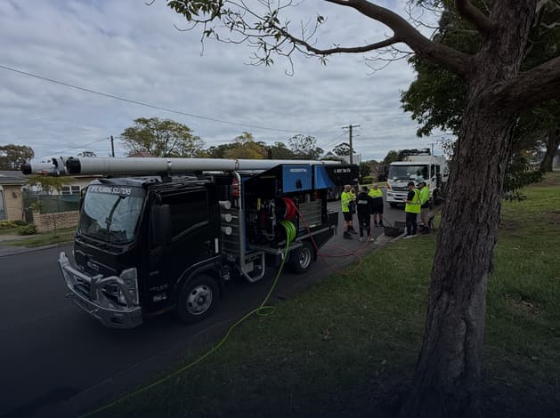
Locate the fault, isolate the service and make the area safe for occupants and the public.
Clear the blockage, then run the camera to establish why it happened.
Report the finding, price any repair needed, and issue the record for your files.
Our truck mounted jetter cuts roots and scours the full bore of the pipe, rather than punching a hole through the blockage.
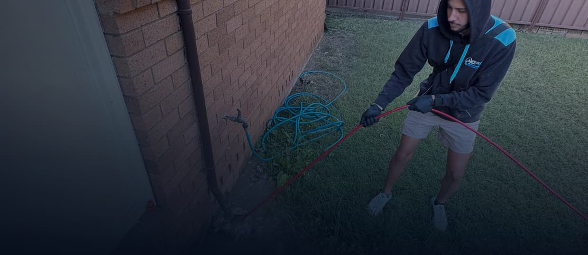
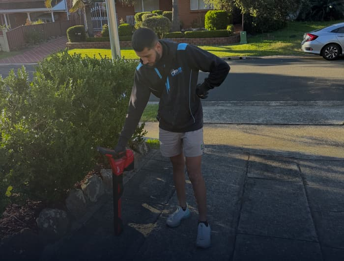
An eel cuts a passage and the drain runs again, until the same roots grow back. Jetting strips the material off the pipe wall, and we pair it with a camera so you find out why it blocked.
Digging is not always the answer. Where a drain runs under concrete, paving or a building, we can reline it from the inside and leave the surface untouched.
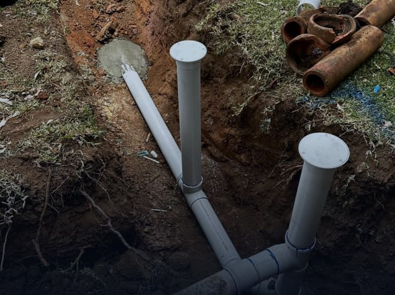
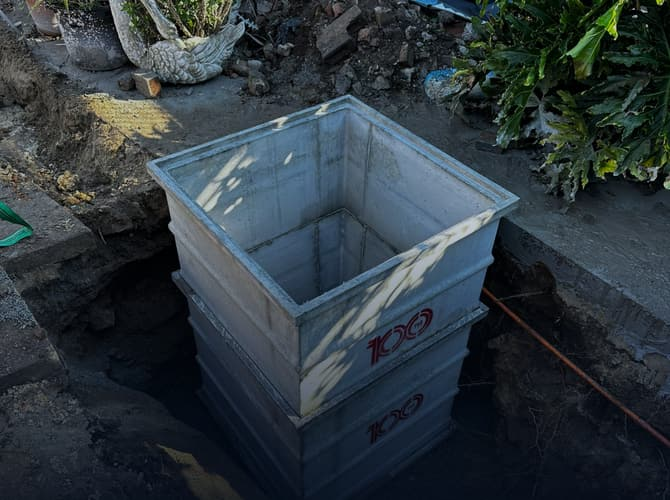
Excavate and replace, or reline from the inside. We inspect first, then recommend whichever suits the site, the surface above it and the budget. There is always more than one option, and we will tell you which one we would choose and why.
Repair decisions should rest on what the camera shows, not on a guess.
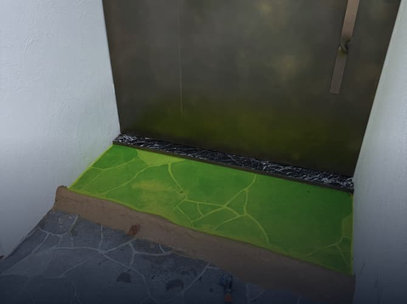
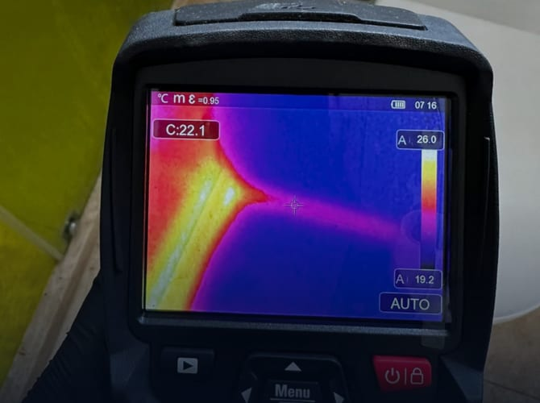
An asset manager should be able to see the original defect and the finished repair without having been on site. That is what turns a maintenance spend into a decision you can defend at budget time.
Drainage should be managed as an asset, not as an emergency. A scheduled program moves plumbing spend out of after hours rates and into planned, budgeted work.
Set against site risk, asset condition and history.
| Asset | Frequency |
|---|---|
| Commercial kitchens, grease lines | Quarterly |
| Sites with tree root history | 6 monthly |
| Schools, childcare and aged care | 6 to 12 monthly |
| Strata and residential buildings | 12 monthly |
| Stormwater pits and car parks | Before storms |
| OSD tanks and discharge pits | 12 monthly |
| Hot water plant | 12 monthly |
| Backflow devices | 12 monthly |
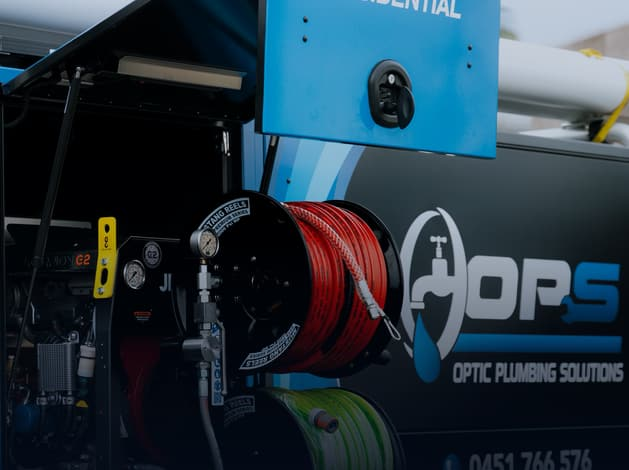
We baseline the site with a camera, rank the assets by what failure would actually cost you, set a frequency for each, and document every visit. Emerging defects get flagged with a price before they become emergencies. Issues then get dealt with at business hours rates, across a single site or a whole portfolio under one schedule.
Backflow devices protect the drinking water supply. On most commercial and council property they must be tested and recorded every year.
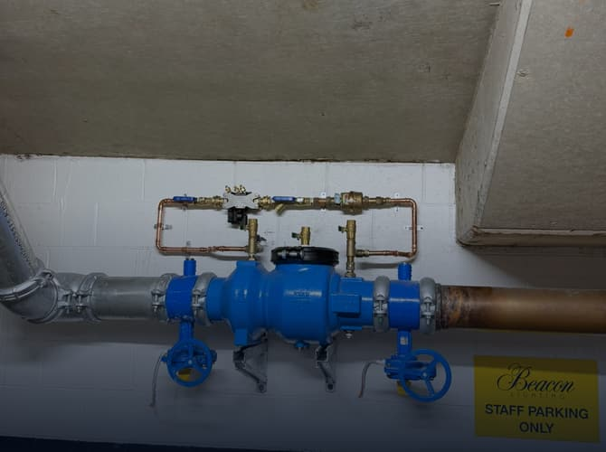
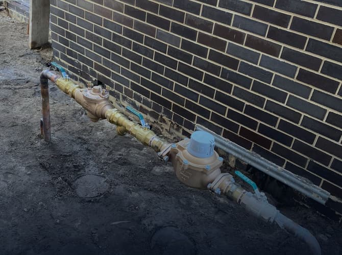
Test results, compliance certificates and defect reports are only useful if somebody keeps them. We issue them in writing every time, so the site holds a paper trail for an auditor, an insurer or the next contractor.
Beyond drainage, we hold the rest of the plumbing scope for a site, so you are not coordinating three trades.
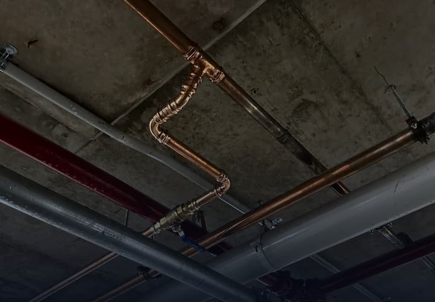
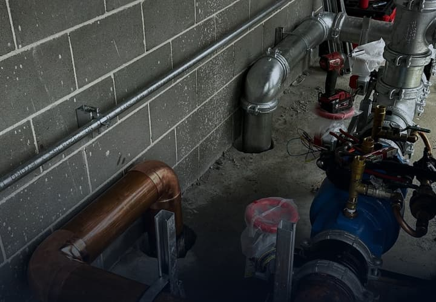
Council and government assets, and the commercial buildings that have to keep trading while we work in them.
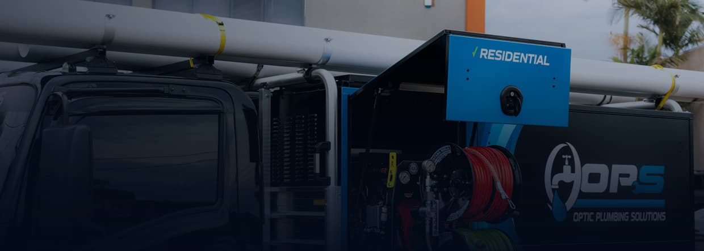
Public amenities carry their own profile: heavy use, no supervision and almost no tolerance for closure. Repeated clearing usually hides a fault worth finding.
| Consideration | Our approach |
|---|---|
| Public safety | Work areas isolated and signed. Open excavations and pits never left unsecured. |
| Disruption | Booked around operating hours, events and community use where the fault allows. |
| Asset protection | Paving, turf and structures protected, then reinstated to the condition found. |
| Communication | One point of contact, with findings reported to your nominated officer. |
Commercial and government work carries a higher standard of documentation and site management than domestic work. We operate to it by default.
Diagnostic and clearing equipment travels on the vehicle. That is the difference between finding the fault today and booking a second visit.
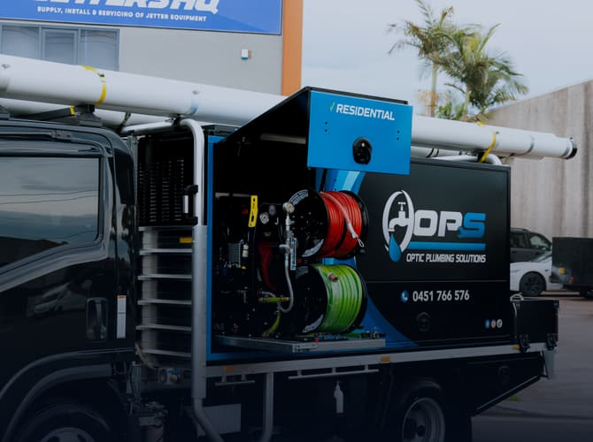
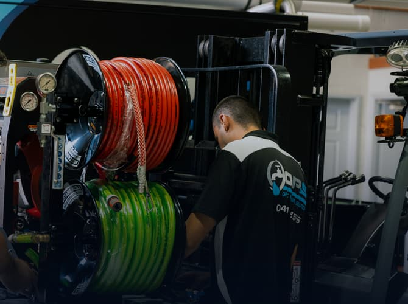
The same sequence whether it is a 2am blocked main or a booked quarterly visit. Nothing assumed, nothing undocumented, no surprise on the invoice.
Taken by a licensed plumber. Urgency and access confirmed on the call.
Fault located and isolated. Hazards come before diagnosis.
Camera or leak detection establishes the actual cause.
Findings and options before chargeable work begins.
Licensed tradespeople, WaterMark materials, AS/NZS 3500.
Service retested, with camera verification where relevant.
Surfaces returned to the condition found. Site left clean.
Written and photographic record issued for your files.
| Engagement | Response |
|---|---|
| Emergency | 24 / 7, priority attendance |
| Urgent works | Same or next business day |
| Quoted and scheduled works | Booked to suit site operations |
| Preventative maintenance | Programmed in advance |
Based in Concord and working Sydney wide. Attendance times are confirmed on the call, and specific response times can be agreed as part of a maintenance contract. Where a fault goes past an agreed approval threshold we stop at make safe and issue a scoped quotation first.
Six reasons a council, facilities manager or property group keeps us on the panel.
Emergency response and drainage are our core work, not a sideline funded by new construction.
The 24/7 line reaches a licensed plumber. Urgency is judged by someone qualified to judge it.
Clearing a drain is the start of the job. If a fault will come back, we say so and price the fix.
Excavate or reline. We inspect first, then recommend what suits the site and the surface above it.
We assume the building is trading. Isolation, staging and reinstatement are standard, not extras.
Written findings, photos and footage that support asset registers, claims and budget submissions.
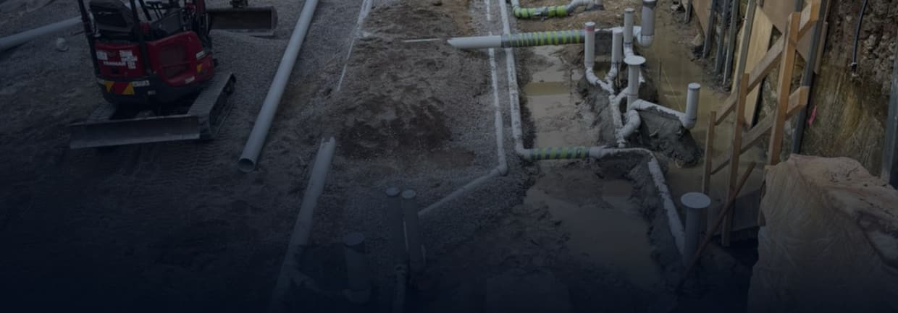
After hours rates, tenant disruption, water damage make good, and repeat visits to a fault nobody diagnosed. Our job is to move your spend from unplanned to planned.
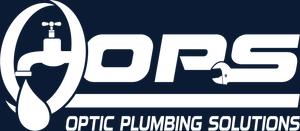
Describe the fault, the site and the urgency.
Licence, insurance and SWMS for registration.
Written scope and price, or attend and report.